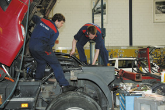

Infotage und Schnuppern
Der persönliche Kontakt zwischen Lehrmeister/in und Bewerbenden ist der zentrale Moment im Selektionsverfahren. Infotage, Schnuppertage und Schnupperlehren sind daher das absolut wichtigste Instrument in der Lehrlingsselektion. Denn erst dann zeigt sich: Passt diese/r Bewerber/in in unseren Betrieb? Können wir uns vorstellen, mit diesem Menschen zusammen zu arbeiten? Der direkte Kontakt hilft auch, Meinungen und Menschenbilder zu revidieren. Das ist für Jugendliche ausländischer Herkunft besonders wichtig. Und alle Jugendlichen sollten wissen, wer vielleicht ihr/e Vorgesetzte/r wird und wie es im Betrieb zu und her geht.
Kurz: Mit einer intensiven gegenseitigen Auseinandersetzung können viele Schwierigkeiten während der Lehre vermieden werden.
So wird Schnuppern zum Erfolg:
- Prüfen Sie die Möglichkeit, bereits während des Berufswahlunterrichts im 8. Schuljahr so genannte «Schnuppertage» anzubieten. Die Schüler/innen und der Betrieb können sich auf diese Weise ohne Druck kennen lernen. Solche unverbindlichen Kontakte in die Arbeitswelt zu knüpfen ist gerade für Jugendliche von Bedeutung, die nicht von vornherein – über Eltern und Bekannte – über ein Netzwerk verfügen. Das trifft auf Einwandererfamilien besonders häufig zu.
In der Praxis werden – je nach Kapazitäten und Einsatzmöglichkeiten – verschiedene Formen des Schnupperns angewendet:
- Informationsnachmittage:
Sie informieren über den Betrieb, die Lehre und deren Anforderungen. Im Anschluss an Ihre Präsentation können Sie die Interessenten im direkten Gespräch kennen lernen oder Gruppengespräche durchführen. - Schnuppertage bzw.-mehrtägige Schnupperlehren (ideal: 1 Woche):
Beanspruchen etwas mehr Zeitaufwand und eignen sich vor allem dann, wenn Sie nur wenige Bewerber/innen haben oder der Kandidatenkreis bereits eingeschränkt ist. Beide Seiten können sich während der Arbeit, aber auch in gemeinsamen Pausen oder beim Mittagessen «beschnuppern» – und sich für eine Entscheidung genügend Zeit lassen.
- Informationsnachmittage:

- Definieren Sie für kürzere wie auch für längere Einsätze die Tätigkeiten, die fürs Schnuppern geeignet sind. Einen Tag lang Aufräumen oder am Kopierer stehen ist sicherlich nicht ideal, um den Betriebsalltag kennen zu lernen.
- Legen Sie einige Kriterien fest, auf die Sie beim Schnuppern oder an den Infotagen achten möchten. Was soll herausgefunden werden, und warum?
- Lassen Sie Ihre Schnupperangebote von verschiedenen Mitarbeitenden im Betrieb begleiten. Aktuelle Lernende und Mitarbeitende mit ausländischer Herkunft können helfen, Brücken zu schlagen. Zudem: Mehrere Meinungen tragen zu objektiveren Entscheidungen bei!
- Legen Sie Wert darauf, während und nach dem Schnuppern den Jugendlichen individuell ein Feedback zu geben. Für diese ist es wichtig zu wissen, in welchen Bereichen sie sich noch verbessern können und wie ihre Chancen auf eine Lehrstelle stehen. Vergessen Sie nicht: Schnuppereinsätze stellen für die meisten Jugendlichen den ersten Kontakt mit der Arbeitswelt dar!

«Ich bin hartnäckig geblieben und habe mich zu meinem Traumjob durchgekämpft.»
Katerina Velikikeska, Medizinische Praxisassistentin, 1. Lehrjahr

«Als ich die Zusage erhalten habe, habe ich mich sofort für einen einmonatigen Deutschkurs angemeldet und dafür auf die Ferien im Kosovo verzichtet.»
Selami Tahiri, Detailhandel, 1. Lehrjahr

Co-finanziert im Rahmen von Bildungsgewerkschaften.ch (finanziell unterstützt vom Bundesamt für Berufsbildung und Technologie).
Zukunft statt Herkunft dankt dem National Coalition Building Institute für die fachliche Unterstützung. Web: Raskin.